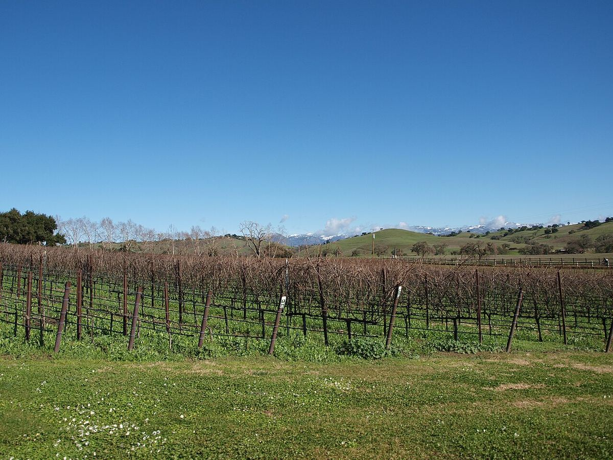

BIANCO
Home › Stati Uniti › Santa Barbara
Contea con diverse AVASanta Barbara
La contea di Santa Barbara, all’estremità meridionale della Costa Centrale californiana, deve la sua freschezza a valli orientate da est a ovest che incanalano la nebbia del Pacifico. È un riferimento per il Pinot Nero e lo Chardonnay californiani.

Storia
I missionari spagnoli coltivarono la vite nella zona di Santa Barbara dalla fine del Settecento, ma la viticoltura moderna della contea è recente. Tra la fine degli anni Sessanta e l’inizio dei Settanta furono piantati i primi grandi vigneti commerciali, tra cui quello di Sanford & Benedict, nel 1971, a ovest di Buellton, e poco dopo quello di Bien Nacido, nella valle di Santa Maria, che rifornisce numerose cantine. Negli anni Ottanta produttori come Au Bon Climat dimostrarono il potenziale della zona per il Pinot Nero e lo Chardonnay. Il film Sideways, girato nella regione e uscito nel 2004, ne accrebbe molto la notorietà presso il grande pubblico.
Clima e suoli
La particolarità di Santa Barbara è geografica: a differenza della maggior parte delle catene costiere californiane, che corrono da nord a sud, qui montagne e valli sono orientate da est a ovest. Questa disposizione apre corridoi attraverso i quali la nebbia e il vento del Pacifico penetrano in profondità verso l’interno. Di conseguenza le zone occidentali, più vicine al mare, sono tra le più fresche della California, mentre il clima diventa progressivamente più caldo verso est. I suoli sono vari: sabbiosi e limosi nella valle di Santa Maria, con diatomiti e suoli calcarei nelle Sta. Rita Hills, e più argillosi o sassosi nell’interno.
Sottozone
La contea riunisce diverse AVA. Santa Maria Valley, a nord, è una delle più antiche della California e si distingue per Pinot Nero, Chardonnay e Syrah di clima fresco. Santa Ynez Valley comprende varie sottozone: Sta. Rita Hills, all’estremità occidentale e molto fresca, il cui nome fu abbreviato in seguito a un accordo con la cantina cilena Viña Santa Rita; Ballard Canyon, associata soprattutto alla Syrah; Los Olivos District; e Happy Canyon of Santa Barbara, la più calda, nota per i vitigni bordolesi.
Stili
Nelle zone fresche dell’ovest dominano Pinot Nero e Chardonnay, dall’acidità vivace e da stili che vanno dal più leggero al più concentrato. La Syrah e altri vitigni del Rodano occupano un posto di rilievo al centro della contea, mentre Cabernet Sauvignon e Sauvignon Blanc si coltivano soprattutto nelle zone più calde dell’est. Data la grande varietà della contea, le etichette indicano spesso un’AVA precisa o persino un singolo vigneto anziché la sola contea.
Vini · Santa Barbara
ROSSO